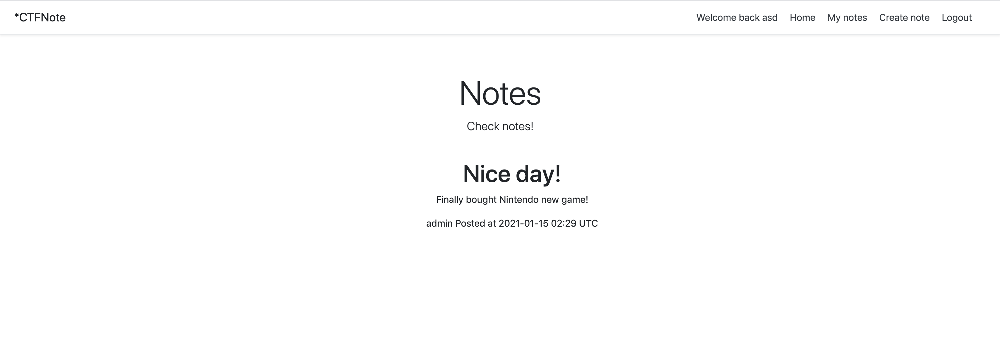
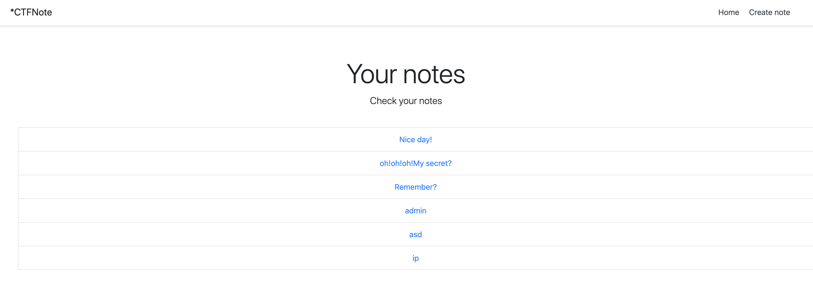
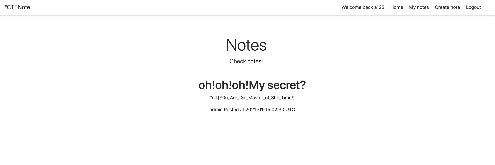

摘要
*ctf-2021-docker : https://github.com/sixstars/starctf2021
oh-my-note
时间戳爆破
思路
给了代码，其中在create_note函数，存在可以通过时间戳爆破从而获取admin的权限。admin的相应信息位于note中的Nice day!页面
http://url/view/lj40n2p9qj9xkzy3zfzz7pucm6dmjg1u

分析-关键代码
1 | app.route('/create_note', methods=['GET', 'POST']) |
可以看到其中的逻辑是，判断是否存在user，不存在的话就通过时间戳生成新的user。其中时间戳生成中，可以看到通过random.seed播种，调用get_random_id（下），生成固定随机数组成user_id。
1 | def get_random_id(): |
而note_id通过user_id和post_at播种后，再次调用get_random_id生成固定的值。
通过题目得知，我们已知的admin页面的note_id值为lj40n2p9qj9xkzy3zfzz7pucm6dmjg1u。post_at的值为2021-01-15 02:29 UTC。那么我们就还需要知道user_id的值，也就是以下代码
1 | timestamp = round(time.time(), 4) |
其中题目UTC时间表示国际标准时间，与北京时间相差8小时，因此我们需要加上去，且时间精确到秒（题目只有分钟），故需要爆破60*10000次即可。参考脚本（改自星盟）
1 | import random |
最终获得admin的user_id为7bdeij4oiafjdypqyrl2znwk7w9lulgn。通过my_notes进入读取admin的文章
1 |
|

